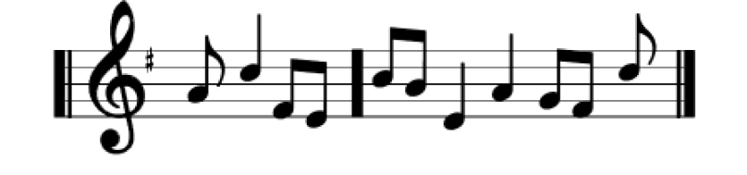
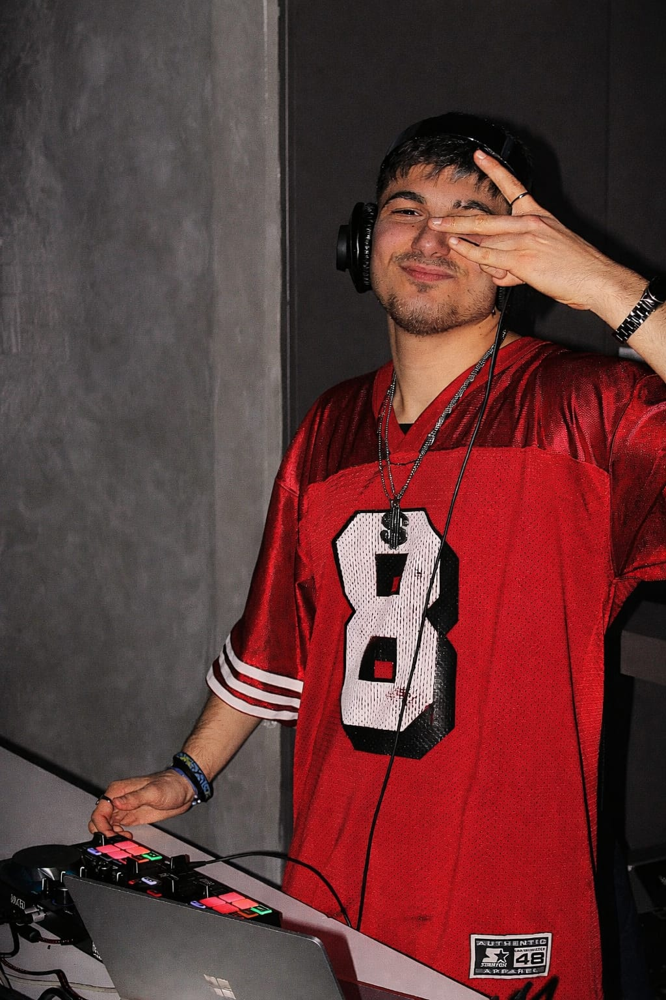
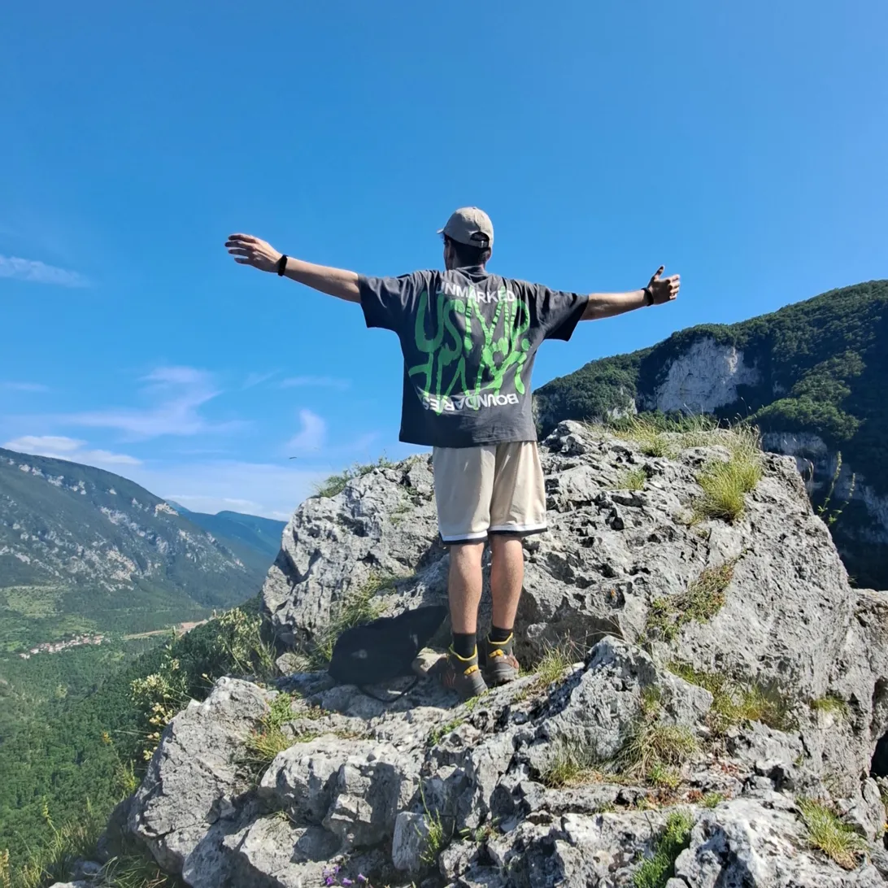
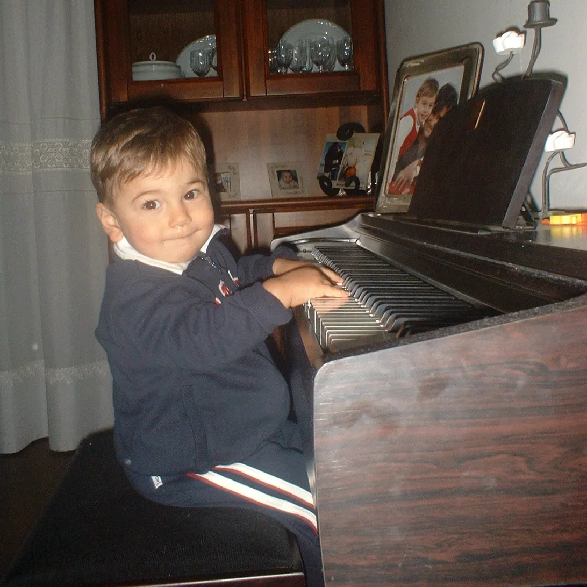
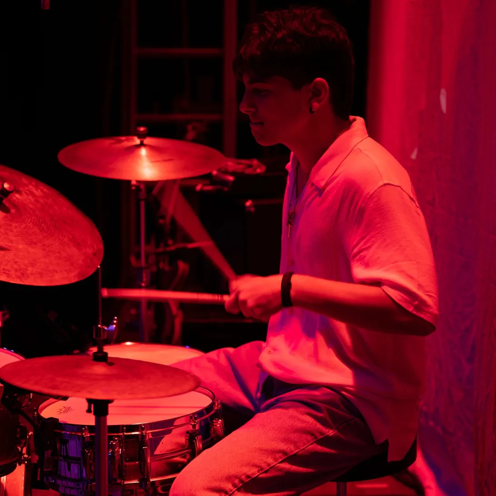

Piacere, Riccardo Cappella. Vivo di musica e arte e questo è il mio PORTFOLIO per conoscermi meglio.
Inanzitutto piacere!
Sono Riccardo e frequento il quinto anno di informatica all'IIS Marconi Pieralisi.
Ho scelto questo percorso perché la tecnologia e lo sviluppo di programmi sono sempre state per me
un qualcosa di affascinante, buttandomi in questo mondo con la fame di imparare per creare qualcosa di mio
unendo anche la mia creatività e arte.
Ma io non sono solo questo...
Fin da piccolo ho sempre avuto un collegamento profondo con l'arte, e in particolare con la musica.
Ho iniziato da piccolo (dall'età di 8 anni) come ballerino Hip-Hop e Breakdance; e ora, sempre mantenendo il mio
sono capace anche di creare la mia musica.
Infatti da tempo ho iniziato il mio percorso anche lavorativo di DJ e artista musicale, nello specifico dell'ambito Rap/Hip-Hop.
Mi reputo una persona molto timida, non sempre trovo la forza e le parole per parlare agli altri...
Ma quando di mezzo c'è la musica, e la mia musica, trovo la forza per tutto.



Frequento il quinto anno dell'indirizzo Informatica presso l'IIS Marconi Pieralisi. Un percorso che unisce rigore tecnico e cultura generale, formandomi sia come futuro professionista del settore che come persona.
In un mondo pieno di "rumori bianchi", io sto cercando di creare la mia musica, come DJ e musicista: produzione di musica originale, mixaggi, performance live ed eventi. Un progetto artistico che si evolve set dopo set, traccia dopo traccia.
E' sicuramente il progetto più ambizioso e quello a cui sto più lavorando. Già da piccolo ho sempre la musica nel sangue, anche grazie a mio padre, chitarrista che mi ha introddo alla musica e ai suoi generi stupendi. Grazie a questo ho avuto il coraggio di compiere un passo importante per il mio futuro, e per me: abbandonare tutto per la musica, per la mia musica. Attualmente, come si può vedere, occupo il ruolo di DJ e artista musicale. Mi considero ancora molto acerbo ed emergente come artista, ma credo in me e credo in questo progetto. Al momento come DJ porto generi come Hip-Hop/Boom Bap anni 90', Techno House, Drum n Bass e Trap.
Membro attivo di una crew di Hip-Hop presso la scuola di danza Balletto Delle Marche. Coreografie, esibizioni pubbliche, gare e collaborazioni artistiche. Il palcoscenico come spazio di ricerca e crescita personale.
Pratico questo sport dall'età di otto anni, anche a livello agonistico, partecipando a corsi come le nazionali, organizzate dalla FIDS (Federazione Italiana Danza Sportiva) o ad altri concorsi ed eventi come Danza in Fiera. Come sovracitatoi generi su cui sono più ferrato sono Hip-Hop, e attualmente sto studiando anche House, Afro e altre variazionni di Hip-Hop.
I RadioFreaks sono una band di cui faccio parte da tempo, e di cui sono il batterista. Siamo una cover band di musica Rock e di tutto lo Spectrum del genere, provando anche a creare della nostra musica originale.
Siamo un gruppo nato nel 2023 grazie alla scuola di musica che ci accomuna: Opus1 (Pantiere). Siamo formati da una chitarra, un basso, una tastiera, una voce, una batteria e tanta tanta voglia di fare. Portiamo cover delle rock band più famose, come Muse, Radiohead, Foo Fighters, Paramore, e altro ancora... Attualmente abbiamo fatto un pò di esibizioni, come alla Festa dell' 1 maggio nel 2025 a Moie; abbiamo suonato anche ai Giardini pubblici a Jesi e altro ancora. Per contattarci scrivere QUI.
Attività continuativa come DJ per eventi, feste e serate. Sviluppo del progetto artistico personale tra produzione musicale e live set.
Anni di palcoscenico attraverso tre realtà distinte: danza, musica d'insieme e folklore. Esperienza in performance dal vivo, coordinamento e lavoro di gruppo.
Lavoro educativo con bambini: gestione del gruppo, attività didattiche e relazione con i più piccoli. Esperienza che ha rafforzato empatia e capacità comunicative.
Percorso per le Competenze Trasversali e l'Orientamento svolto nell'ambito del corso di informatica. Prima esperienza strutturata nel mondo professionale del settore tech.
Scarica la presentazione PCTOChe sia per un progetto, una collaborazione o semplicemente per conoscersi — MI TROVATE QUI.